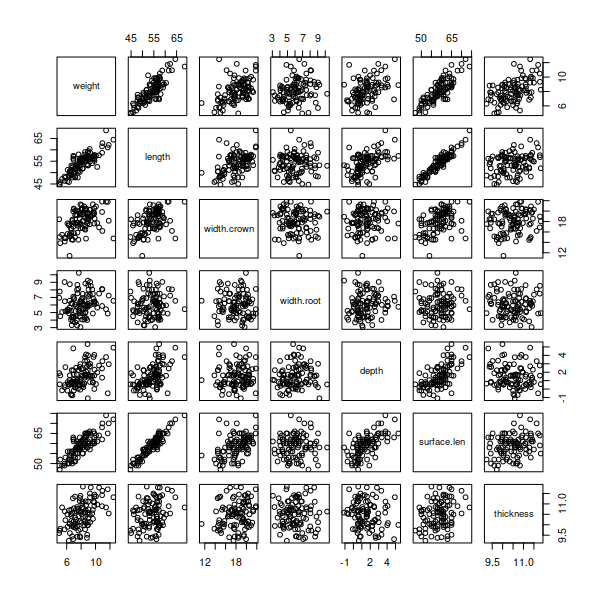
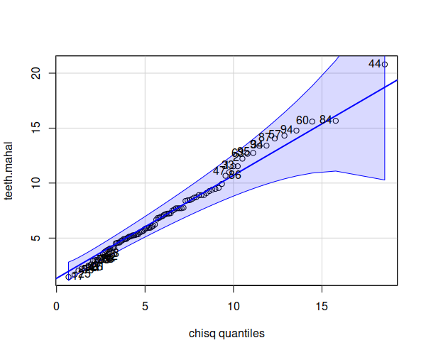
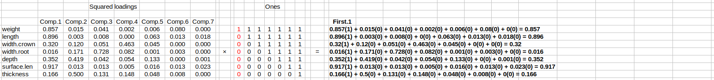

Today we are going to learn to conduct a principal components analysis on the buffalo tooth measurements we made a few weeks ago. PCA is a method used with un-grouped multivariate data made up of numeric variables, which is what our buffalo tooth measurements are. You would do a principal components analysis if you wanted to accomplish one or more of the following:
Understanding the structure of a data set. Structure refers to any explainable variation in the data, and in this case the structure of interest is inter-correlations between variables. The familiar correlation coefficient, r, measures relationships between two quantitative variables at a time, but when there are three or more variables we need methods like PCA to understand how they are inter-related.
Constructing latent variables. Latent variables are those that exist conceptually but can't be measured directly with a single measurement, such as size and shape. Each principal component has the potential to be used as a latent variable, although typically we get more components than there are interpretable latent variables.
Reducing the dimensionality of a data set. Multivariate data challenges our poor 3D brain's ability to comprehend, and methods like PCA help us interpret complex data sets by expressing patterns within the data on fewer axes that are easier to visualize and understand.
The basic questions we need to address when we conduct a PCA are:
Is it a good PCA? A good PCA expresses patterns of inter-correlation between multiple variables, such that a small set of PCA axes can stand in for a larger number of variables. If this is the case, then there will be at least one axis that explains a substantial fraction of the variation in the original data, and no more than a few that explain enough to be worth retaining for interpretation.
What does each component tell us about inter-correlations between the variables (structure), and given that how should we interpret the components (latent variables)?
Which variables are being well represented by the PCA axes we retain for interpretation, and which are not? Since our purpose is to retain some of the PCA axes but not all of them, it is possible for some variables to be very well represented on the axes we keep and other to be poorly represented. In addition to more fully understand what the retained PCA axes are telling us we should be aware of what they are failing to capture in the original data.
If you recall from the data screening exercise, the tooth data had several outliers, and I fixed them by re-measuring the problem teeth. If you look at the scatterplot matrix of the fixed data here you will see that the relationships all look linear, and the issues with measuring depth is resolved - I re-measured all of the depths using a depth gauge (like this one), and that helped a lot; the depth measurement was very hard to do with calipers. To make the depth measurements more consistent I positioned the depth gauge in the middle of the tooth from top to bottom and measured the depth at the middle, which for some teeth was on a bump that projected above the plane from the crown to the root - this resulted in some negative measurements (that is, those depths are actually heights of the bump). I also re-measured various teeth that had univariate outliers, or apparent entry errors (things like surface lengths that were longer than lengths, which isn't possible given how we measured).
I made a quantile comparison plot of Mahalanobis' distances against the Chi-square distribution to spot multivariate outliers and re-measured those teeth as well. After all the re-measuring the data set met the multivariate assumptions - here is the final quantile comparison plot, and you'll see it looks fine.
Measurement and data entry is really important
Time for a quick public service announcement:
Re-measuring teeth took care of all of the outliers in this case, but bear in mind that re-measuring is a luxury you can't always count on. If you're working with wild populations of animals and you mis-measure something on an animal that you've captured, and don't realize this until you're screening your data later, you can't easily measure them again after they've been released. Or, if you are measuring wet weight and dry weight of organs in a mouse you can't re-hydrate them to weigh them again after they are dried. A single missing measurement for one variable requires us to drop the variable or the case, neither of which are good things (and the more time intensive or expensive each case is to measure the less pleasant it is). Careful data collection is crucial.
Similarly, data entry errors can sometimes be fixed and sometimes not. If you accidentally entered lengths and depths in the wrong columns the numbers are different enough to detect the problem, but if you accidentally swapped depth and width of root the measurements are similar enough that they aren't obviously wrong. We entered our data straight into the computer, which is a time saver, but it means that the only place the values ever appeared was in the spreadsheet. Researchers will often either enter data into their notebooks first and then enter the data from their notebooks into the computer later, or they may go so far as to make up data sheets printed on paper to use to collect the data (like this one). This redundancy gives you a way of checking for possible entry errors - if you see a number that doesn't look right in the computer you can check to see if it's the same as on the original data sheet. Paper is also pretty durable stuff, and provides a way of recovering from accidental deletion of files on the computer, or other forms of data loss (have you ever sorted a data set in Excel, not realizing that only part of the data set was being sorted? I have! Good way to scramble your data - better hope you have backups!). I've even heard of projects where they enter their data twice using two different technicians, and differences between them are used to detect errors.
Of course data sheets don't help if you write down the data incorrectly, or do the measurement wrong. Reliable results start with careful data collection.
Let's move on to the analysis.
PCA finds axes that best explain patterns of shared variation across multiple variables. A PCA on a correlation matrix finds the strongest patterns of inter-correlation between the variables - the correlation matrix is made up of bivariate correlation coefficients, but PCA axes uses these to find inter-correlations among all of the variables. A 3D scatter plot, in which we can graph three variables on coordinate axes, and two additional ones via color and size variation, allows you to look at the patterns in the data in up to five variables at a time, out of the seven we measured.
Try out different sets of variables on the axes, and as color and shape choices - the color scale uses red for small values of the color variable, grading into green for large values. Sets of variables that result in the strongest patterns of correlation (i.e. tight ellipsoids that tilt along the axes, with color and size change from one end to the other) represent five variables that are strongly inter-correlated.
With seven variables we can't fully visualize how PCA will work, since we're only able to look at five at a time (and admittedly it's harder to see the patterns represented by color and symbol size). If you focus on just the three variables on the x, y, and z axes then you can rotate the axes until the points are covering as much of the left to right space as possible, and are parallel with the bottom of the screen - if you drew a line horizontally through the points you would have the first PCA axis. Rotating the points like a rolling pin around that first line until the data take up as much space vertically as possible, and then drawing a vertical line down the middle would give you PCA 2. The third axis would be perpendicular to the first two. Withe seven axes we would continue this process through 7D space, if we could comprehend it. Fortunately for us, PCA can handle 7D space just fine.
There are several ways to get a PCA in R, but we will stick with the
commands available in the base package, rather than relying on extension
libraries.
1. Preliminaries - new project, data and Rmd files. Start a new project and download this Rmd file into it.
Import the data from this file - the worksheet is called teeth_fixed, and you can import it into a dataset called teeth. Import the data set as a data frame (use data.frame(read_excel()) to convert it as you import it). Put this command in the code chunk labeled "import.data".
The only variable that isn't a measured variable is tooth.num. We can assign the tooth numbers as row labels, which will be useful later when we plot our PCA. Use the command (in the "assign.row.labels" code chunk):
row.names(teeth) <- teeth$tooth.num
The row numbers and tooth ID numbers are the same, so this step isn't critical for this analysis, but R will use the row names in the biplots we produce below - assigning an identifier to the row names helps us link the graphs back to the measured objects, which helps us interpret the results.
We will be producing some matrices of output that do not display well when we allow R to use huge numbers of decimal places. We can set the default to 3 decimal places by adding the command into the setup block at the top of your Rmd file (the first code chunk, labeled "setup") - make a blank line within the setup block and enter:
options(digits = 3)
This will make the output easier to read.
2. Inspect the correlation matrix. We don't really want to do a PCA unless we have at least a few correlations in the 0.4-0.6 range or bigger (positive or negative). We will make a correlation matrix of all of the variables in teeth, excluding the tooth.num column (which is not a measured variable).
Make your list of variable names (in code chunk make.variable.names):
variable.names <- c("weight","length","width.crown","width.root","depth","surface.len","thickness")
To get the correlation matrix, use the command (code chunk cor.matrix):
cor(teeth[variable.names])
The command that makes the correlation matrix is cor(), and we apply it to the list of variables in variable.names, from the teeth data set. Note that we didn't assign the output to an object, so this just reports the correlation matrix to the screen.
Look at the correlation matrix, and note variables that are highly correlated with one another - these will end up being well represented by one of the first few components. Also see whether there are any variables that are not strongly correlated with anything else - these will probably not be well represented by the first few components of the PCA, but may end up being well represented by a single axis all by themselves.
Bear in mind that correlations are between pairs of variables, but PCA axes are placed through the entire data set. It's possible to have strong relationships among groups of variables that do not show up well two variables at a time, so we could still get a good PCA from a correlation matrix with nothing but moderate-sized bivariate correlations. However, if there are several big bivariate correlations a good PCA result is nearly certain.
3. Conduct the PCA. We will use the princomp() function to conduct our PCA. The command is (chunk run.pca):
princomp(teeth[variable.names], cor = T) -> teeth.pca
teeth.pca
The princomp() command takes the variables to use as its first argument, and the second argument, cor = T, causes princomp() to use the correlation matrix instead of the covariance matrix for the analysis. We assigned the output to teeth.pca, then entered the name teeth.pca so that we could see the result on the screen.
What you see on the screen is not much:
Call:
princomp(x = teeth[variable.names], cor = T)
Standard deviations:
Comp.1 Comp.2 Comp.3 Comp.4 Comp.5 Comp.6 Comp.7
1.877 1.114 1.007 0.868 0.558
0.342 0.204
7 variables and 100 observations.
The "Call" just reports back to you what you asked for in the princomp() command. The "Standard deviations" are the square roots of the eigenvalues for each component. Since variances are the square of standard deviations, you can see that only the first three components have variances over 1, and would be retained for interpretation under the Kaiser-Guttman rule.
One minor annoyance with princomp() is that it presents standard deviations for the components, but doesn't present variances. We can get variances using (in the Console):
teeth.pca$sdev^2
which will give you:
Comp.1 Comp.2 Comp.3 Comp.4 Comp.5 Comp.6 Comp.7
3.5224 1.2400 1.0140 0.7543 0.3110 0.1167 0.0416
Comp.1 is accounting for about 3.5 variables-worth of variance. These are the eigenvalues for the PCA, and are the values that will be plotted in the scree plot. We can get a scree plot with the command (scree.plot code chunk):
plot(teeth.pca)
Scree plots are useful for detecting big natural breaks in explained variance for the PCA axes - there is a big drop between the first and second component, and then another fairly big drop between the fourth and fifth. Based on the scree plot we might retain only the first component for interpretation, or we might retain between two and four, depending on the interpretability of the axes as latent variables.
We can get some additional output to help us decide how well the PCA is summarizing patterns in the data by using the command (in chunk summary.of.pca):
summary(teeth.pca)
which gives you:
Importance of components:
Comp.1 Comp.2 Comp.3 Comp.4 Comp.5 Comp.6 Comp.7
Standard deviation 1.877 1.114
1.007 0.868 0.5577 0.3416 0.20407
Proportion of Variance 0.503 0.177 0.145 0.108
0.0444 0.0167 0.00595
Cumulative Proportion 0.503 0.680 0.825
0.933 0.9774 0.9941 1.00000
You will see that in addition to the standard deviation there is now a row of output showing the proportion of variance explained by each component, and a running total (cumulative proportion) - yes, they report standard deviations and then give proportions of variance explained, I don't know why. The first component explains 0.503 (50.3%) of the variation in the entire data set, and the second component explains an additional 17.7%, for a cumulative proportion of 68%. If we retained only these two components for interpretation we would be focusing on 68% of the variation in the data, and discarding 32%. Going to the third component accounts for a total of 82.5% of the variation, going to the fourth gives us 93.3%, and so on.
4. Interpreting the components as latent variables. Interpreting what the PCA axes mean is best done by looking at how they correlate with the measured variables - specifically, the correlation between the variables and the PCA scores.
The teeth.pca object contains several named elements - we can see what they are with (in the Console):
names(teeth.pca)
which shows us:
[1] "sdev" "loadings" "center" "scale" "n.obs" "scores" "call"
Here we run into a terminology problem...
What the princomp() command has labeled loadings are the eigenvectors that relate raw variables to components - these are the equivalents to slope coefficients that are used to position the axes, and to calculate scores. In lecture, and in your textbook, loadings are the correlations between variables and components that we use to interpret the axes, but R calls these structure coefficients. We will stick with the book's naming convention, and continue to use loadings to refer to correlations between data and scores, but that means that the loadings in teeth.pca are not actually what we're looking for.
Instead, what we need is to correlate the scores from teeth.pca with the raw tooth variables (calculate.loadings.with.cor chunk):
cor(teeth[variable.names], teeth.pca$scores) -> teeth.loadings
teeth.loadings
which produces the output:
Comp.1 Comp.2 Comp.3 Comp.4 Comp.5
Comp.6 Comp.7
weight 0.926 0.1216
0.2035 0.0426 0.0757 0.2823 0.00512
length 0.947 -0.0547 -0.0876
0.0186 0.2504 -0.1122 -0.13316
width.crown 0.566 0.3465 -0.2267 -0.6806 -0.2116 -0.0193
-0.00379
width.root 0.125 -0.4129 0.8530 -0.2869 -0.0260
-0.0584 0.00191
depth 0.593 -0.6473
-0.2042 0.2317 -0.3649 0.0116 -0.02932
surface.len 0.958 -0.1142 -0.1146 0.0733 0.1267
-0.1121 0.15133
thickness 0.407 0.7069 0.3622 0.3841
-0.2188 -0.0893 -0.01060
This is the same cor() command as we used to make a correlation matrix, but this time we are correlating one data set (the raw data in teeth) with another (the scores for each tooth on each component). Instead of a symmetrical correlation matrix we get correlations between variable in the rows with each PCA axis in the columns.
We can use these to help us interpret the PCA axes as latent variables. We'll start with PCA axis 1 (called Comp.1 by R):
Next consider Comp.2 - this is the second largest pattern in the data, and is independent of size (as indicated by Comp.1):
We could choose to interpret Comp.3 as well:
By the time we've gotten to the third component we're interpreting axes that explain a fairly small fraction of the variance in the data (14% for Comp.3). We saw that there was a large drop in size of eigenvalue between Comp.4 and Comp.5, so we might choose to interpret Comp.4 as well - doing so will get us to 93% of the variation in the data. Based on the loadings for Comp.4:
Latent variables that only represent one actual measured variable are pretty undesirable - if we were going to interpret variation in one variable at a time there would be no reason to do PCA, and we could just stick with the simpler approach of analyzing the measured variables. Of the four, the first two components have done the best job of representing an aspect of the morphology of the teeth that is not measured directly, but is constructed from two or more measured variables. Comp.1 and Comp.2 are our best latent variables, therefore.
Now that we have defined Comp.1 as a size variable, and Comp.2 as a shallowness variable, we can look at the scores to see which individual teeth are high or low on each axis. A simple way to do this is to add the scores as columns in the teeth data set so that we can look at them next to the measured variables. In chunk add.comp.scores.to.teeth enter:
data.frame(teeth, teeth.pca$scores) -> teeth
This command makes a new data frame starting with the existing one (teeth) and adding additional columns using the scores from teeth.pca. By writing the result back into teeth we replace the old version with the new version that has the additional columns of component scores.
If you click on teeth in your Environment it will open up a viewer that has sortable columns - scroll over to the right until you see the Comp.1 variable, and click on the header to sort on it. This will put teeth with large negative values at the top, which are the smallest teeth, and those with large positive values at the bottom, which are the biggest teeth (clicking again sorts in reverse, if you want to look at the big teeth more easily). If you compare the data values it should be clear that small teeth tend to be small on weight, length, and surface length primarily, but all of the variables to an extent, while large teeth are large consistently on weight, length, and surface length, but across all of the variables to a degree.
5. Using PCA axes as latent variables. Since we have components that represent size and shallowness of water buffalo teeth we might want to use these variables as a way of measuring size and shallowness in other teeth that weren't included in the original analysis. To use the components in this way we just need to score new teeth onto the components and then interpret their scores as measures of size and shallowness.
The sheet new_teeth in your Excel file has measurements on five teeth that were not used to conduct the PCA, but that we can score onto our PCA axes. Import the data from the new_teeth sheet into a data set called new.teeth (in chunk import.new.teeth).
The simplest way to get the new teeth scored onto our principle components axes is to use the predict() function on teeth.pca, using new.teeth as the data to get predicted values for - in chunk score.new.teeth.predict enter:
predict(teeth.pca, new.teeth)
which will give you the component scores for these five new teeth, like so:
Comp.1 Comp.2 Comp.3
Comp.4 Comp.5 Comp.6 Comp.7
[1,] -1.3415 0.350 0.613 0.9646 -0.20492 0.3801
-0.2949
[2,] -0.0108 0.436 -1.448 -1.2315 0.45090 0.3117
0.0130
[3,] 0.1611 -0.307 -0.171 0.6132 -0.00186 0.0372
0.0470
[4,] 1.0558 0.951 -0.859 0.0717 0.15920 -0.2331
-0.1045
[5,] 0.3996 0.165 0.851 -0.8681 -0.24040 0.2391
-0.0672
From this output we can see that the first tooth is small (-1.3415 on Comp.1) while the fourth is large (1.0558 on Comp.1). The shallowest tooth is number 3 (-0.307 on Comp.2), and the deepest is tooth 4 (0.951 on Comp.2).
Using predict() is the easiest way to score new observations if you have access to the original princomp() object. But, if you don't you can still score new observations if you have the means and standard deviations of the original variables, and have the coefficients from the principal components analysis.
For example, if we were reading a paper that used PCA to come up with latent variables representing size and shallowness of water buffalo teeth, the paper might have a table like this one:
| Variable | Mean | Std. Dev. |
|---|---|---|
| Weight | 8.11 | 1.550 |
| Length | 54.10 | 4.436 |
| Width of crown | 18.09 | 2.132 |
| Width of root | 6.08 | 1.518 |
| Depth | 1.51 | 1.325 |
| Surface length | 58.89 | 5.388 |
| Thickness | 10.50 | 0.637 |
We can use these to scale the new teeth relative to the original data set's means and standard deviations. To use them we just need to put them into vectors - in chunk original.teeth.means.sd enter:
orig.teeth.means <- c(8.11,54.10,18.09,6.08,1.51, 58.89,
10.50)
orig.teeth.sds <- c(1.550,4.436,2.132,1.518,1.325,5.388,0.637)
Now we need to subtract the means and divide by the standard deviations to scale the new teeth. R has a command for doing this called scale() - in chunk new.teeth.scaled enter:
scale(new.teeth[teeth.vars], center = orig.teeth.means, scale
= orig.teeth.sds) -> new.teeth.scaled
new.teeth.scaled
You'll see the new teeth data are now expressed as standard deviations:
weight length
width.crown width.root depth surface.len thickness
[1,] -0.17419 -0.7462
-1.121 -0.0791 -0.302
-1.0932 0.5651
[2,] 0.00645 0.1646
1.229 -1.0540 -0.574
0.0204 -1.0518
[3,] 0.07097 0.0812
-0.488 -0.2306 0.423
0.2060 0.0314
[4,] 0.27742 0.7755
0.704 -1.0013 -0.121
0.5772 0.5495
[5,] 0.50323 -0.0406
0.736 0.9354 -0.196
-0.1652 0.1413
attr(,"scaled:center")
[1] 8.11 54.10 18.09 6.08 1.51 58.89 10.50
attr(,"scaled:scale")
[1] 1.550 4.436 2.132 1.518 1.325 5.388 0.637
Note that this was necessary because we did the PCA on a correlation matrix, which also works with scaled variables. If we had done the PCA on the covariance matrix we could have skipped this step.
Below the scaled values are two blocks labeled "attr" - these are attributes of the data, which are like little notes attached to the object. One gives the means that were used for scaling (attr(,"scaled:center")), and the other gives the standard deviations used (attr(,"scaled:scale")). You can ignore these, they won't get used when we score the teeth, they are just annotations attached to the new.teeth.scaled object.
We also need the coefficients from the original PCA - our imaginary published report would also have provided those, in a table like this:
| Variable | Comp.1 | Comp.2 |
|---|---|---|
| Weight | 0.4931 | 0.1092 |
| Length | 0.5044 | -0.0491 |
| Width of crown | 0.3015 | 0.3112 |
| Width of root | 0.0664 | -0.3708 |
| Depth | 0.3159 | -0.5813 |
| Surface length | 0.5102 | -0.1026 |
| Thickness | 0.2169 | 0.6348 |
These are the eigenvectors that define the relationship between the original variables and the axes, and they're found in teeth.pca$loadings.
We need to make a matrix of these in R - put the following command in chunk pca.coefficients:
comp1.coef <- c(0.4931,0.5044,0.3015,0.0664,0.3159,0.5102,0.2169)
comp2.coef <- c(0.1092,-0.0491,0.3112,-0.3708,-0.5813,-0.1026,0.6348)
cbind(comp1.coef, comp2.coef) -> coeff
coeff
Your matrix of coefficients should match this one:
comp1.coef comp2.coef
[1,] 0.4931 0.1092
[2,] 0.5044 -0.0491
[3,] 0.3015 0.3112
[4,] 0.0664 -0.3708
[5,] 0.3159 -0.5813
[6,] 0.5102 -0.1026
[7,] 0.2169 0.6348
Now we have what we need to score the new teeth (in score.new.teeth chunk):
new.teeth.scaled %*% coeff -> new.teeth.scores
new.teeth.scores
You'll see the teeth scored onto the first two PCA components like so:
comp1.coef comp2.coef
1 -1.3360 0.344
2 -0.0122 0.430
3 0.1590 -0.309
4 1.0491 0.942
5 0.3962 0.160
The column labels are taken from our vectors of coefficients, but the first column has scores for Comp.1 and the second has scores for Comp.2. These numbers are not quite the same as the ones we got with predict(), but the differences are only due to rounding error (R has 15 digits of precision, but we only used two for the means). Aside from the slight differences in numeric value, the general pattern is the same - the first tooth is the smallest, the fourth is the largest, and tooth 3 is shallow while teeth 4 is deep.
PCA axes as solutions to multicollinearity
Here's a little something for the folks who took Biol 531 from me (or something to look forward to if you haven't yet)...
If you recall, we worried a lot about the lack of independence between predictor variables in our multiple regression models. Lack of independence between predictors is called multicollinearity, and when your predictor variables are all numeric you can measure it as correlation between the predictors. A classic paper by Graham (2003) illustrated the problem with data on the sizes of kelp beds, which he tried to explain using measures of wave orbital displacement (OD), wave breaking depth (BD), wind velocity (W), and tidal height (LTD). These predictors are, not surprisingly, correlated with one another:
OD BD LTD W
OD 1.0000000 0.7283401 -0.2809058 0.6814375
BD 0.7283401 1.0000000 -0.3385944 0.6337279
LTD -0.2809058 -0.3385944 1.0000000 -0.3565089
W 0.6814375 0.6337279 -0.3565089 1.0000000Because of this, when you try to use them all in the same regression model there is some amount of the size of the kelp beds that can be explained by any of the variables, but not by a single variable uniquely. Because of this you can get a different result in your multiple regression depending on the order that you enter the predictors - for example, if OD is entered as the first predictor it is the only one that is significant:
Response: Response
Df Sum Sq Mean Sq F value Pr(>F)
OD 1 0.92599 0.92599 45.2454 1.156e-07 ***
BD 1 0.00366 0.00366 0.1790 0.67494
LTD 1 0.01282 0.01282 0.6264 0.43434
W 1 0.07305 0.07305 3.5695 0.06766 .
Residuals 33 0.67538 0.02047But if instead it is entered last then everything but LTD is significant:
Response: Response
Df Sum Sq Mean Sq F value Pr(>F)
BD 1 0.55108 0.55108 26.9267 1.056e-05 ***
LTD 1 0.02125 0.02125 1.0385 0.315580
W 1 0.24740 0.24740 12.0881 0.001444 **
OD 1 0.19580 0.19580 9.5669 0.004015 **
Residuals 33 0.67538 0.02047The fact that OD is correlated strongly with BD and W means that we'll get a different impression of which variables affect kelp bed size depending on which predictor variable we attribute the shared variation to. In general, we don't like analytical procedures that give completely different results depending on seemingly unimportant analytical decisions.
One of Graham's suggested solutions is to conduct a PCA on your predictors, and then use PCA scores as predictors instead of the measured variables. Since PCA axes are independent of one another this means that the order that we enter the axes doesn't affect the results - that is, this model:
Response: Response
Df Sum Sq Mean Sq F value Pr(>F)
PC1 1 0.91279 0.91279 44.5999 1.329e-07 ***
PC2 1 0.02631 0.02631 1.2853 0.2651
PC3 1 0.01790 0.01790 0.8748 0.3564
PC4 1 0.05853 0.05853 2.8596 0.1003
Residuals 33 0.67538 0.02047is identical to this one:
Response: Response
Df Sum Sq Mean Sq F value Pr(>F)
PC4 1 0.05853 0.05853 2.8596 0.1003
PC2 1 0.02630 0.02630 1.2852 0.2651
PC3 1 0.01790 0.01790 0.8747 0.3565
PC1 1 0.91279 0.91279 44.6001 1.329e-07 ***
Residuals 33 0.67538 0.02047This fixes the multicollinearity problem, but it does make the result harder to interpret - we know now that PC1 explains variation in kelp bed size, while the other PC's do not, but we now have to figure out what PC1 means. If we look at the loadings we find:
PC1 PC2 PC3 PC4
BD 0.8734721 0.16097806 -0.35372367 0.29328098
OD 0.8777079 0.26036660 -0.09690756 -0.39043878
LTD -0.5421128 0.83786242 0.04083502 0.04939739
W 0.8591610 0.09900154 0.48440036 0.13188246PC1 represents high breaking depth, high orbital displacement, high wind speed, and to a lesser extent lower tide height. Graham was able to interpret PC1 as indicating areas that had experienced storms at low tide. Taking this approach lets us see that W, BD, and OD are collectively associated with variation in kelp bed size, rather than attributing all of the effect to OD alone.
So, the take-home message is: you can address multicollinearity by using principal components as a set of uncorrelated predictors. The cost is that the interpretation is less straightforward than if you used the raw variables - but, if the components make sense as latent variables it can be a very effective approach.
6. Interpreting structure - loadings and biplots. Loadings are also useful for understanding the structure in the data set, but rather than using the variable loadings to uncover what latent variable is represented by each axis, we focus instead on the variables themselves. The multi-way interrelationships between the variables are interpretable by noting which variables have high positive or negative loadings. For example, Comp.1 is showing us that the strongest pattern in the data is intercorrelation between weight, length, and surface.len.
Another excellent method for understanding structure is the biplot. Biplots use the PCA axes as the x and y axis of the graph, and plot the cases based on their scores on the PCA axes. They then use the loadings to plot the variables as vectors (that is, arrows pointing outward from the origin) to indicate the variables. To get a biplot of the PCA, type (biplot chunk):
biplot(teeth.pca, pc.biplot = T)
The numbers in the graph are row names, which we set to be tooth numbers. Teeth that are close together in the graph will have a similar morphology (similar shape and size), and teeth that are far apart will have a different shape or size.
Using pc.biplot = T uses the x and y axes for the scores, and the right and top axis scales for the loadings.
Note that I added fig.width=7.5,fig.height=7.5 to the {} section for this code chunk - this makes the graph 7.5 inches tall and wide in the knitted output, and in your Rmd file it helps with readability by scaling the fonts to an image of that size.
The primary purpose of a biplot is to help you interpret components. Components should be interpreted one at a time - the vectors whose arrowheads are furthest out along the x-axis have the highest loadings on the first component, and are thus the ones that the first component represents best. The vectors point in the direction of increasing data values for that variable, so if the arrows point to the right that means that bigger data values are receiving positive scores on the first component.
Arrows that lie nearly on top of an axis have high loadings on that axis, but low loadings on the other.
You can change which component scores are plotted by adding the argument (in the Console):
biplot(teeth.pca, choices = c(1,3), pc.biplot = T)
which causes component 1 to be plotted on the x-axis, and component 3 to be plotted on the y-axis. Component 1 is the same as in the previous biplot, so we still see the same size variation from left to right, but since width.root is the primary determinant of component 3 the vertical position on this graph primarily tells us whether the tooth had a wide root (high) or a narrow root (low).
7. Consequences of reducing dimensionality - calculate communalities. Note that if we only interpret PCA axis 1 and 2 then we are basing our interpretation of the data on the two strongest patterns of variation, and would have managed to reduce the dimensionality from 7 variables to 2. But, we are only interpreting a total of 68% of the variation in the data if we stop with the second axis. That 68% variation accounted for simultaneously tells us that 32% of the variation in the data is not being interpreted at all, and that discarded 32% is going to be primarily due to variables with low loadings on the first two components.
To understand at the level of individual variables how much we are retaining or discarding when we interpret only the first n components we calculate communalities. Communalities are calculated from squared loadings, and they measure the proportion of variance explained by a PCA axis for a variable.
The loadings we calculated in step 4 are in teeth.loadings, so now we need to square the loadings and assign them to another object (explained.variation chunk):
teeth.loadings^2 -> teeth.var.explained
teeth.var.explained
You'll see:
Comp.1 Comp.2 Comp.3 Comp.4
Comp.5 Comp.6 Comp.7
weight 0.8566 0.01478 0.04140 0.001815
0.005724 0.079669 2.63e-05
length 0.8960 0.00299 0.00767 0.000344
0.062689 0.012590 1.77e-02
width.crown 0.3202 0.12006 0.05140 0.463160 0.044769 0.000374 1.44e-05
width.root 0.0155 0.17050 0.72757 0.082335 0.000675 0.003405
3.65e-06
depth 0.3515 0.41900 0.04168 0.053685
0.133175 0.000134 8.60e-04
surface.len 0.9169 0.01305 0.01314 0.005367 0.016063 0.012556 2.29e-02
thickness 0.1657 0.49964 0.13116 0.147549 0.047883 0.007982
1.12e-04
The carat is used to indicate an exponent, so "^2" means to square all the correlations in "teeth.loadings". You'll see that Comp.1 is explaining over 91% of the variation in surface.len, but only about 1.6% of width.root. If we only interpreted the first component we would be nearly ignoring the information in width.root.
By the way, if you sum these for each component you'll see they equal the eigenvalues for each axis (in the Console):
colSums(teeth.var.explained)
gives you:
Comp.1 Comp.2 Comp.3 Comp.4 Comp.5 Comp.6 Comp.7
3.5224 1.2400 1.0140 0.7543 0.3110 0.1167 0.0416
which are the same values that we got when we squared the standard deviations of the components to get the eigenvalues, above.
To know how much variation we would retain across the first 2, or first 3, or first 4 components we just need to sum the variance explained for each variable across the components - the components are independent, which means that the variance explained by each component is non-overlapping with all the others, and summing across all seven components will thus explain 100% of the variation in every variable.
To get communalities from the squared loadings, we are going to do something clever with a matrix multiplication. First, we want to make a matrix that looks like this:
| 1 |
1 |
1 |
1 |
1 |
1 | 1 |
| 0 |
1 |
1 |
1 |
1 |
1 | 1 |
| 0 |
0 |
1 |
1 |
1 |
1 | 1 |
| 0 |
0 |
0 |
1 |
1 |
1 | 1 |
| 0 |
0 |
0 |
0 |
1 |
1 | 1 |
| 0 | 0 | 0 | 0 | 0 | 1 | 1 |
| 0 | 0 | 0 | 0 | 0 | 0 | 1 |
That is, a matrix with the same number of rows and columns as we have variables and components (so, seven rows by seven columns) with 1's on the main diagonal and in all the upper-triangle elements and zeros as lower-triangle elements. To make this matrix, we'll use the command (in the communalities chunk):
round(upper.tri(matrix(0, nrow = 7, ncol = 7, diag = T))) -> ones.matrix
If you click on ones.matrix in your Environment it will open up for you to view, and you'll see you have the matrix you need, with 1's in the upper triangle and main diagonal, and zeros elsewhere.
This command works first by making an 7x7 matrix of 0s, and then converting it to the upper triangular matrix we need. The commands work like so (in the Console):
| Step | Command | Result | |||||||||||||||||||||||||||||||||||||||||||||||||
|---|---|---|---|---|---|---|---|---|---|---|---|---|---|---|---|---|---|---|---|---|---|---|---|---|---|---|---|---|---|---|---|---|---|---|---|---|---|---|---|---|---|---|---|---|---|---|---|---|---|---|---|
|
First, we make an 7 x 7 matrix of anything (we're using 0's here, but anything would work). |
matrix(0,7,7) |
|
|||||||||||||||||||||||||||||||||||||||||||||||||
|
Test whether each cell is in the "upper triangle", including the main diagonal - this function is a logical test, and it returns either TRUE or FALSE. You'll see that the TRUE values are where we want the 1's to be, and the FALSE values are where we want the 0's to be. |
upper.tri(matrix(0,7,7), diag = T) |
|
|||||||||||||||||||||||||||||||||||||||||||||||||
|
To convert the TRUE and FALSE into 1 and 0 we just need an operation that converts boolean variables to numeric values. The round() function does this, and the output becomes a matrix of 1's on the main diagonal and above, and 0's below the main diagonal. |
round(upper.tri(matrix(0,7,7), diag = T)) |
|
Okay, if we now matrix multiply our squared loadings by this ones.matrix we'll get running sums of explained variation (in chunk communalities, next line):
teeth.var.explained %*% ones.matrix -> teeth.communalities
Finally, to make the result easier to read, we are going to add column names to the matrix of communalities. The first column has the variance explained for each variable by the first PCA axis, the second column has the variance explained by the first two PCA axes, and so on. To make the labels "First.1" through "First.8" we can use the paste() function, which combines arguments into a text label, along with the seq() function, which makes sequences of numbers. In the Console enter:
paste("First", seq(1,7), sep = ".")
and you should see:
[1] "First.1" "First.2" "First.3" "First.4" "First.5" "First.6" "First.7"
We will use these as our column labels - enter the command (in chunk communalities, after the command that made teeth.communalities):
colnames(teeth.communalities) <- paste("First", seq(1,7), sep = ".")
teeth.communalities
This sets the names on the columns of teeth.communalities, so that when they display it's easier to keep track of what each column is telling you. You should see:
First.1 First.2 First.3 First.4 First.5 First.6 First.7
weight 0.8566
0.871 0.913 0.915 0.920
1.000 1
length 0.8960
0.899 0.907 0.907 0.970
0.982 1
width.crown 0.3202 0.440 0.492
0.955 1.000
1.000 1
width.root 0.0155 0.186
0.914 0.996 0.997
1.000 1
depth 0.3515
0.770 0.812 0.866 0.999
0.999 1
surface.len 0.9169 0.930 0.943
0.948 0.965
0.977 1
thickness 0.1657 0.665
0.796 0.944 0.992
1.000 1
Why did this work? Remember, matrix multiplication is done across the left matrix and down the right...
Okay, now that we have them we can use these running totals to tell us how much variation in each variable would be included if we only retained up to that number of component axes. We already saw that if we retained only the first component we would retain a lot of the size-related variables but not much of variables like width.root, thickness, width.crown, and depth. If we retain the first two axes we capture more of the variation in the variables that were poorly represented by the first component alone, except for width.root, which isn't well represented until the third axis is retained.
Based on the Kaiser-Guttman rule, we would only retain the first three variables for interpretation, so look at the communalities to see what effect this would have. We would not be basing our interpretation of the data on 100% of any of the variables if we retained the first three components, and for some variables we would discarding over 50% of their variation in our analysis.
This is the choice you make when you use multivariate methods to reduce the dimensionality of the data - you choose to focus on the major, most interpretable, multivariate patterns in the data, but you treat the variation that is not explained by the retained components as unimportant. Ultimately, whether this is a good thing or a bad thing depends on the question being addressed - if we were interested in generating a size index that makes use of multiple measured indicator variables but doesn't rely on any single measure alone, then the fact that a lot of the variation in the data is size-independent doesn't matter; we got our size index, and we'd be happy with that. If we were trying to understand the inter-relationships of all the variables we measured, and all of the variables we measured are important to us, then stopping at 3 axes would mean poorly understanding width.crown, and we might want to interpret the first four axes so that we can base our interpretation on at least 86.6% of the variation for every variable.
8. Confirm that the PC axes are independent of one another. An important feature of PCA axes is that they are forced to be independent of each other. This means that once we know how to interpret the first PC axis we can interpret it independently of the others - we can interpret size variation independent of shape variation, and shape variation independent of size variation.
When two continuous numeric variables are independent of one another their correlations should be 0 - you can check this with (in the check.pca.independent chunk):
cor(teeth.pca$scores)
You should see that they are very close to zero, with values with negative exponents of -15 to -17. Mathematically they should be exactly 0, but rounding error results in these small non-zero values. Since the correlations are (nearly) zero the PC axes are (nearly perfectly) independent patterns of variation in the tooth data.
9. Look at the teeth placed on the big PCA plot. It is very helpful when you are learning a new technique like this to relate what the numbers tell you to what the actual objects look like. I have brought a large printout of the PCA, and you can place teeth on the plot according to their numbers. Place teeth that fall as close the the x-axis (PC1) and the y-axis (PC2) as possible, and see how they vary. The teeth along the x-axis should have similar shapes, but differ in size. Teeth along the y-axis should be similar in size, but differ in shape.
Also pay attention to what we are not capturing with our PCA - you may notice that teeth that are really close to one another on the graph are not identical to one another in appearance, which would be a good indication that there are some characteristics that our variables didn't measure.
Complete the questions in your Rmd file, knit, and upload the Word file to complete the assignment.